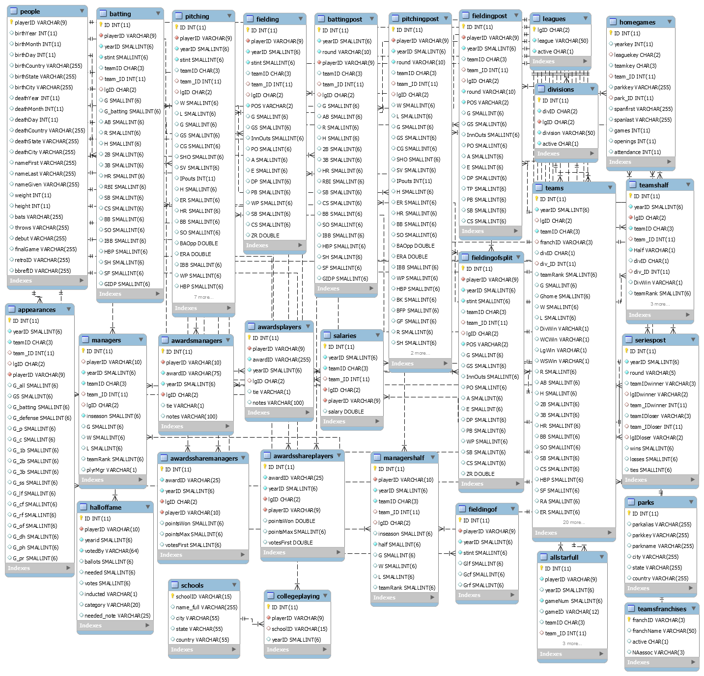
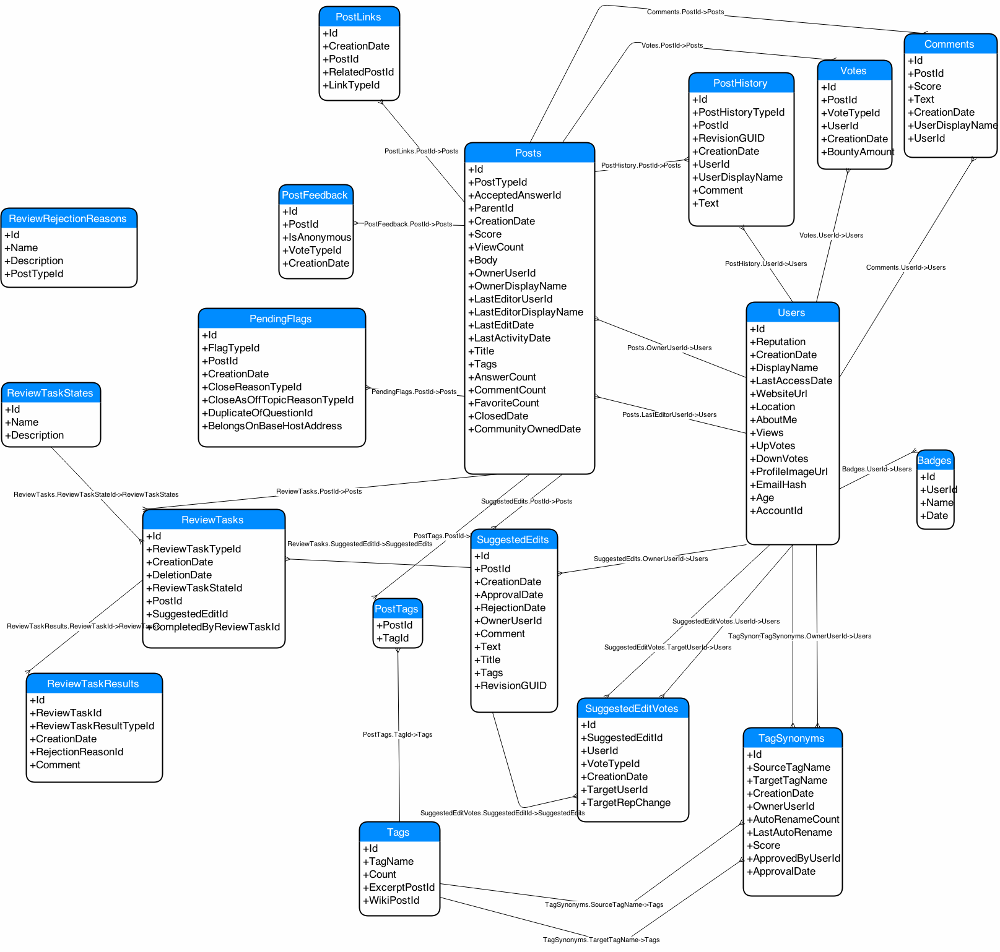

class: center, middle # Relational Databases ### Duncan Temple Lang <div style="clear: both"/> <!-- <hr width="50%"/> --> --- # Goals + Understand essential ideas of Relational Databases + Be able to interact with Relational database to get data from it. + Essentials of Structured Query Language - SQL + Perform computations in the database and then process the results in R. + Be able to read and write SQL code and understand what it is doing. + Understand when using a database is a good idea. --- # *Relational* Database Management Systems - DBMS + Widely used in industry, academia + Data repository/storage for an institution, company, project, etc. + Often multiple databases for different purposes. + Each database is many inter-connected tables containing data for different *entities* + e.g., student, faculty, course, ... + Live data + applications updating the data + others querying it and seeing new, changed data + Relationships between 2 or more tables + connects records + allows us to *merge* rows in tables + 1 to 1 + 1 to many + many to 1 + many to many --- # Efficient, Large Data + Databases capable of handling very large data + Efficient computational model to query and combine data + Efficient storage + Minimize redundancies of repeating the same value. + Only stores and provides data + Limited additional computations can be done in database. + Need to bring subset of the data back to the client to do application specific analysis. --- # Client-Server + Many (most) databases use a client-server model + Single centralized database running on a machine. + Many client applications (e.g., Excel, R, SAS, Python, Web browser) can simultaneously query the database. + From many different machines. + Updating of data done centrally. + Only need to update in a single place. + Next time an application queries the DBMS, get the new, updated data. + All applications need to "wait" to ensure getting correct data. + blocked until data is synchronized. + Database handles many "simultaneous" transactions + synchronize updates of data and queries of current data. --- # Key Concepts + One database made up of one or more tables. + Merge records/rows across one or more tables to create new tables/*views*. --- # Tabular Data + A database is made up of multiple related tables + Each table is rectangular + has rows and columns + like a data frame in R + rows/observations are called tuples + columns are called attributes + Order of the rows should/does not matter. ---  Original https://github.com/WebucatorTraining/lahman-baseball-mysql/blob/master/lahman-model.png ---  --- # Schema + Each table created with a SCHEMA + Specifies the structure of the table + Columns and their types + Columns have specified types + TEXT/VARCHAR, INTEGER, REAL, BOOL, BINARY, BLOB + Indicator for whether NA/NULL values are allowed + Also if values in a column are automatically generated and auto-incremented. --- # Schema + Relationships between records in 2 or more tables. + Value(s) in one record identifies record in other table. + e.g. student id in a table for a course maps to a Student Information table. + Constraints on values for a given column + e.g., Must be unique + Must correspond to an actual value in a column in another table. --- # Creating Databases + Relatively simple to create simple database + But need careful design to create efficient, flexible databases. + Typically, statisticians & data scientists work with existing databases + extract data + less frequently insert, modify or remove data + much less common to design/build databases + Somebody else designs and builds the database. --- # Avoiding Duplication in a Table. Consider all the teams for a given year. ``` player1 team1 2010 player2 team1 2010 ... player70 team1 2010 player71 team2 2010 player72 team2 2010 ... player150 team2 2010 player151 team3 2010 .... player1979 team30 2010 ... player2011 team30 2010 ``` + player could be a player or a manager - i.e., a person. --- # Player details Suppose in each row, we had all of the player's information + name + first + last + given + birth and death information + year + month + day + city + state + country + which hand they + throw with + bat with + debut year + which college they attended + what years + height & weight --- # Next year + For the next year, we would repeat all that information + maybe a different team + but the player biographical information is the same + Better approach + put the player biographic information in a separate table + give each player a unique identifier (playerID) in that table + use that id in the Team table to reference the corresponding row <!-- figure --> + Benefits + Avoid large amounts of repeated, redundant data. + If we ever found a mistake, only update in a single place. --- # Team Information + In the original table, what team information would we include + team name + abbreviations (SFG) + stadium + name + city + state + league + division + wins, losses, home runs, home runs against, ... + This changes each year. + include stadium name and possibly city and state. --- # Better Approach + Have a table for Teams information + a row for each year with all the team information above. + each row has a teamID column + use the teamID in the People table. --- # SQL + Pronounced sequel or spell out SQL + Language for querying the database + Domain Specific Language + analogous to regular expressions for pattern matching in text. + Declarative language + Say what you want to have happen + Not how to do it. + Not a regular programming language. + International Standard + Common core syntax, functionality. + However, each implementation/dialect has own additions --- # SQL Examples ```{sql} SELECT * FROM Table; ``` ```{sql} SELECT COUNT(*) FROM Table; ``` ```{sql} SELECT AVG(*) FROM Table GROUP BY Assignment; ``` ```{sql} SELECT * FROM Table WHERE Month = 2 AND Year = 2024; ``` ```{sql} SELECT COUNT(*) FROM Table; ``` ```{sql} SELECT Month, Year, Value, Elevation FROM Table1 LEFT JOIN Table2 ON Table1.StationId = Table2.StationId; ``` --- # SQL + Everything is a table + rows = tuples + columns = attributes + All results will be tables. --- # SQLite + Standalone and embeded database + Stores all database tables in a single file + Not a client-server model + Only single user at a time + Used in many applications, e.g. Firefox, Google Chrome, OSX, ... + Download most recent version of sqlite to use interactively. --- # SQLite in the Shell + Can use SQLite from terminal, or R (or Python, ...) + Example of using directly from terminal. + Issue SQL commands directly. + I am using the cookies from my Firefox browser ``` ~/Library/Application Support/Firefox/profiles/qszunwne.default/cookies.sqlite ``` + Copied since it is locked when Firefox is running <!-- + I'll give you other databases to explore. --> + Shell/terminal command to run sqlite3 ```shell sqlite3 cookies.sqlite ``` + [Examples and Information](https://support.moonpoint.com/network/web/browser/firefox/sqlite_cookies.php) --- # List tables ``` SQLite version 3.38.5 2022-05-06 15:25:27 Enter ".help" for usage hints. sqlite> ``` + Issue command ``` .tables ``` ``` moz_cookies ``` --- # Show the Table Schema ``` .schema moz_cookies ``` ```sql CREATE TABLE moz_cookies(id INTEGER PRIMARY KEY, originAttributes TEXT NOT NULL DEFAULT '', name TEXT, value TEXT, host TEXT, path TEXT, expiry INTEGER, lastAccessed INTEGER, creationTime INTEGER, isSecure INTEGER, isHttpOnly INTEGER, inBrowserElement INTEGER DEFAULT 0, sameSite INTEGER DEFAULT 0, rawSameSite INTEGER DEFAULT 0, schemeMap INTEGER DEFAULT 0, CONSTRAINT moz_uniqueid UNIQUE (name, host, path, originAttributes)); ``` + lists the names of the columns and their types + SQL command to create the table. --- # SQL Queries directly (not from R) + SELECT is the primary operation + We'll find the number of rows ```sql SELECT COUNT(*) FROM moz_cookies; ``` + SELECT + the variable(s) + FROM + table name + COUNT is an example of an aggregate function + Processes all the rows and combines the values across rows to end up with a single row. + MIN, MAX, AVG are other aggregate functions + Note the ending `;` + Not always necessary, but never wrong! --- # Rows + Get all rows for all columns/attributes in table ```sql SELECT * FROM moz_cookies; ``` + Get all rows for single column named `host` ```sql SELECT host FROM moz_cookies; ``` + Get unique/distinct entries in host ```sql SELECT DISTINCT host FROM moz_cookies ; ``` + Filter/Condition rows ```sql SELECT * FROM moz_cookies WHERE host = "www.nytimes.com"; ``` ``` 399||_cb_ls|1|www.nytimes.com|/|1662868228|1651537452882104|1628740228812044|0|0|0|0|0|2 4208110||_cb|C1JdiXD_6CfJCTs7hT|www.nytimes.com|/|1666304694|1651537452882104|1628740228821310|0|0|0|0|0|2 4208111||_chartbeat2|.1628097019569.1632176694287.0000000000001001.BRuLckklgMiD4OaDBCeBKXlDNj4Q1.1|www.nytimes.com|/|1666304694|1651537452882104|1628740228821487|0|0|0|0|0|2 ``` --- # LIMIT + Like the head() function, want to see only the first n rows in the result. + Use LIMIT ```sql SELECT COUNT(*) FROM moz_cookies LIMIT 20; ``` --- # ORDER BY ```sql SELECT host FROM moz_cookies ORDER BY host; ``` + In descending order ```sql SELECT host FROM moz_cookies ORDER BY host DESC; ``` --- ## Multiple Columns & Transforming Variables ```sql SELECT datetime(expiry, 'unixepoch'), host FROM moz_cookies ORDER BY expiry DESC LIMIT 20; ``` --- ## GROUP BY + Get counts for each host ```sql SELECT host, COUNT(*) FROM moz_cookies GROUP BY host; ``` --- # SQL and R + **Install** the DBI and RSQLite packages. + DBI provides a common interface to many different database servers/engines + Same commands but implemented differently for different DBMS engines + MySQL, Postgres, SQLite, Oracle, ... + Load the package ```r library(RSQLite) ``` + Connect to the database ```r db = dbConnect(SQLite(), "cookies.sqlite") ``` --- # dbListTables() & dbListFields() + Names of the tables in the database ```r dbListTables(db) ``` + Names of the fields in a table ```r dbListFields(db, "moz_cookies") ``` + names of columns in table + Generally, list fields for all tables in the database ```r lapply(dbListTables(db), function(tbl) dbListFields(db, tbl)) ``` --- # SELECT Query ### Number of rows + R Command dbGetQuery() ```r dbGetQuery(db, "SELECT COUNT(*) FROM moz_cookies") ``` + 1st Argument - Connection to the database + Created one time ```r db = dbConnect(SQLite(), "/path/to/sqlite/database/file") db = dbConnect(SQLite(), "cookies.sqlite") ``` + 2nd Argument is SQL command as a string + Analogous to regular expression `rx` in `grep(rx, str)` + interpreted by regular expression engine. + not interpreted by R